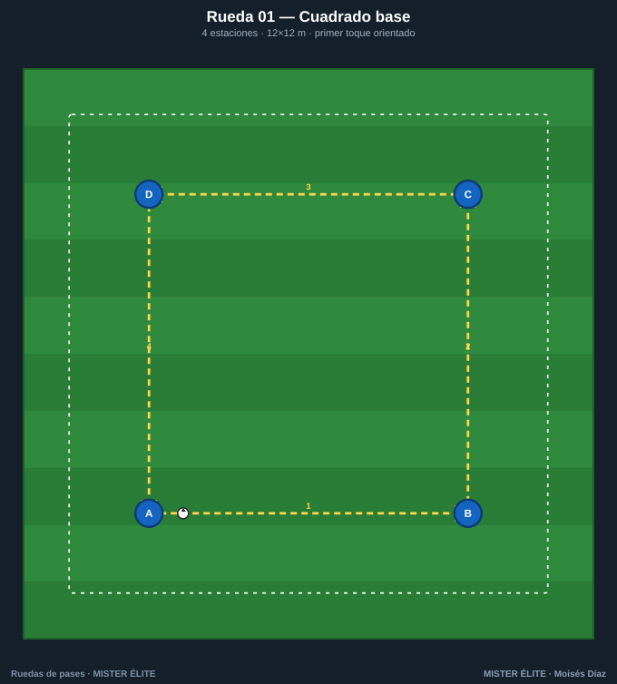
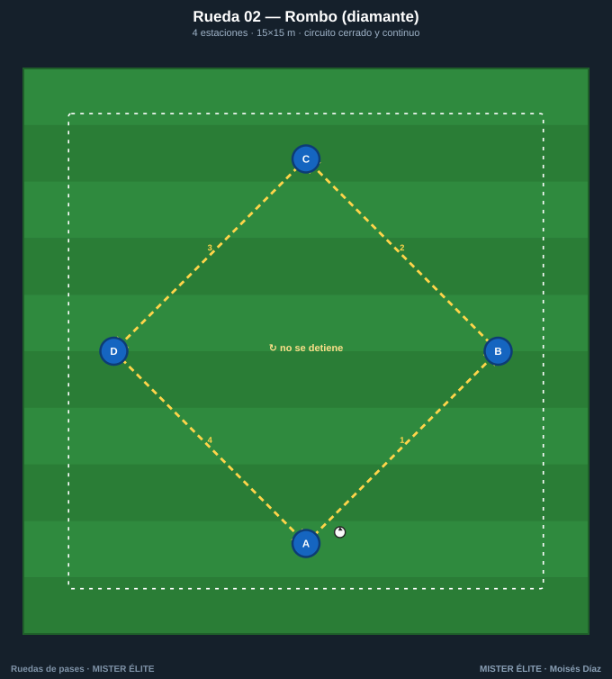
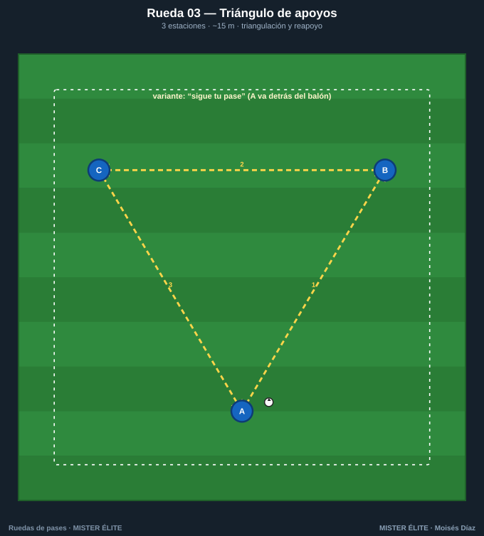
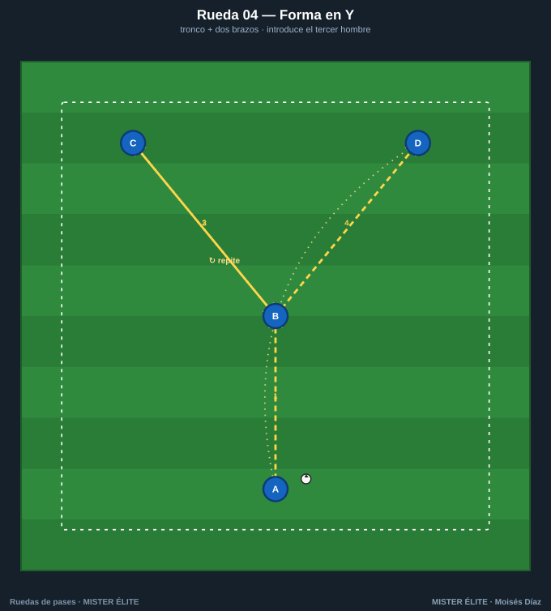
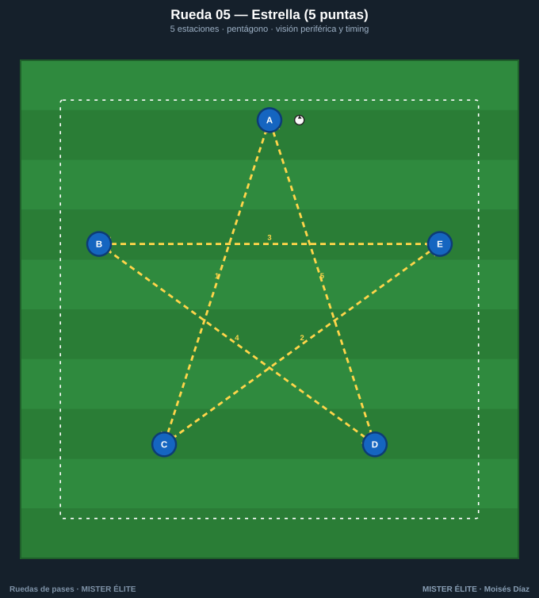

Familia 1 · Ruedas básicas (01–05)
Formas geométricas fijas. El foco está 100 % en la técnica: peso del pase, primer toque orientado y perfil. Son el calentamiento técnico perfecto (estilo Ajax square: pase-recepción a un toque, con el interior, cantando el nombre y con contacto visual). La base sobre la que se construye todo lo demás.
Coaching points de la familia: primer toque orientado · peso del pase al pie correcto · cuerpo de semiperfil · las dos piernas (cambia el sentido).
Rueda 01 — Cuadrado base

- Objetivo: primer toque orientado y pase a estación fija. Calentamiento técnico.
- Secuencia: 1) A→B. 2) B→C. 3) C→D. 4) D→A. Circulación horaria, circuito cerrado.
- Rotación: "sigue tu pase" (corres detrás del balón a la estación que recibió).
- Parámetros: 4 estaciones · 2-3 por cono · 1-2 balones · 12 m de lado · 3-4 min/sentido · 2 toques → 1 toque.
- Coaching: recibir de semiperfil para jugar de cara; pase tenso, no blando.
- Subir nivel: 2.º balón en sentido contrario · cambiar de sentido a la señal · primer toque obligado con la pierna exterior.
Rueda 02 — Rombo (diamante)

- Objetivo: orientación del cuerpo en diagonal; base del juego por dentro.
- Secuencia: 1) A→B. 2) B→C. 3) C→D. 4) D→A, por las diagonales. Cerrado.
- Rotación: "sigue tu pase".
- Parámetros: 4 estaciones · 1-2 balones · ejes de 15 m · 3-4 min/sentido · 2 → 1 toque.
- Coaching: abrir la cadera antes de recibir; primer toque hacia la diagonal de salida.
- Subir nivel: doble balón en sentidos opuestos · dejada de primera en una de las estaciones.
Rueda 03 — Triángulo de apoyos

- Objetivo: triangulación, ángulo de pase y reapoyo; primer toque obligado.
- Secuencia: 1) A→B. 2) B→C. 3) C→A. Circulación continua. Cerrado.
- Rotación: "sigue tu pase" o carrusel de 3 (pasas y giras a la siguiente posición, siempre en el mismo sentido).
- Parámetros: 3 estaciones · 1 balón · lados de 10-15 m · 3 min/sentido · 1-2 toques.
- Coaching: el cuerpo se reorienta al siguiente apoyo mientras llega el balón.
- Subir nivel: set/dejada de primera (el balón no se detiene) · carrusel girando.
Rueda 04 — Forma en Y

- Objetivo: pasar a un vértice y descargar; recepción de cara. Introduce la elección de brazo (base del Y-drill de Schreiner, escalable a 10 variantes).
- Secuencia: 1) A→B (tronco). 2) B abre a C. 3) C devuelve a B. 4) B abre a D. Alternar brazos.
- Rotación: A→B→brazo (rota a la siguiente estación); nadie quieto.
- Parámetros: 4 estaciones · 1 balón · A-B 10 m, brazos 8 m · 3-4 min · 2 → 1 toque.
- Coaching: B juega de cara y a un toque; peso del pase para no cortar el ritmo.
- Subir nivel: overlap (el de la base desborda tras pasar) · terminar en remate (variante Schreiner).
Rueda 05 — Estrella (5 puntas)

- Objetivo: circulación con cambio de orientación constante; visión periférica y comunicación (Ajax star).
- Secuencia: pase "saltando un vértice", dibujando la estrella: 1) A→C. 2) C→E. 3) E→B. 4) B→D. 5) D→A. Cerrado.
- Rotación: "sigue tu pase" (recorre los 5 vértices y vuelve a A).
- Parámetros: 5 estaciones · 1-2 balones · pentágono de ~14 m · 3-4 min/sentido · 2 toques.
- Coaching: escanear antes de recibir (saber a qué vértice se pasa); cantar el nombre + contacto visual.
- Subir nivel: alternar trazo de estrella y pase al contiguo · 2.º balón.